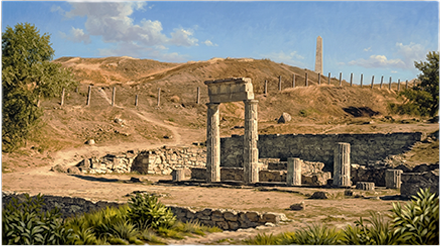

Керчь, известная в античности как Пантикапей (основан в конце VII — начале VI в.
до н. э. милетцами), являлась столицей мощного Боспорского царства.
Археологическое наследие региона уникально: здесь представлены не только городские
кварталы, но и грандиозные курганные некрополи.
Городище Пантикапей (гора Митридат) - центр Боспорского государства.
Здесь находились дворцы царей Спартокидов и главный храм Аполлона.
Сегодня здесь можно увидеть руины жилых кварталов и знаменитую колоннаду
пританея (здания совета), ставшую символом города.
Керченский лапидарий (Музей каменных древностей). Одна из крупнейших в мире
коллекций античных стел, саркофагов и скульптур. Научные публикации
(например, серии «Корпус боспорских надписей») базируются именно на этих фондах.
Здесь можно увидеть портреты боспорцев и надгробные рельефы, детально передающие
греческую моду и доспехи.
Царский курган (IV в. до н. э.). Уникальный памятник погребального зодчества,
предположительно место захоронения одного из боспорских царей (Левкона I или
Перисада I).
Городище Тиритака. Находится в южной части города (микрорайон Аршинцево).
Исследования подтверждают, что Тиритака была крупным центром рыбосоления.
Здесь сохранились фундаменты античных рыбозасолочных ванн и виноделен.

Краеведческий музей

Пирамида с раскопками Керкинитиды